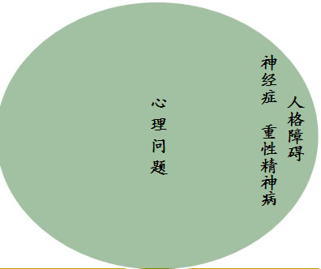
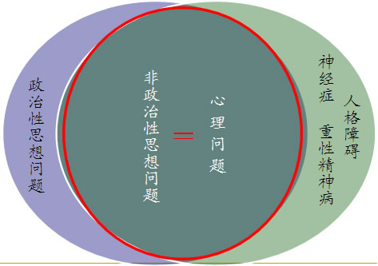
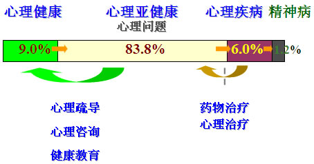

空军心理教育疏导研究中心 主任
空军航空医学研究所 研究员、教授 武国城
5．进行心理诊断治疗
及时发现和医治有心理障碍和疾病的官兵，防止心理问题加重和导致精神疾病。加强对官兵心理状况的分析掌握，对情绪不稳定、行为明显异常人员，搞好随访观察，及早发现，及时报告。实施正确诊断，科学鉴别区分生理问题与心理问题、思想问题与心理问题、一般心理问题与严重心理障碍、心理问题与精神疾病，防止误判误诊。确定合理治疗方案，采取心理疏导、行为矫正、药物治疗等方法，跟踪搞好治疗服务。发现有明显精神疾病倾向的，及时送精神病院诊治。
6．实施心理危机干预
心理危机干预，是对处在心理危机状态下的官兵及时给予的心理援助，有助于官兵摆脱心理困境，重新适应生活。官兵面对突发事件、重大灾害、严重挫折等，容易诱发各种心理危机。要组织专业力量，根据官兵心理应激反应状况，通过社会情感支持、个体认知干预、教授心理应对方法等，帮助官兵消除心理困扰，防止产生心理创伤。对有自杀或伤害他人等极端行为倾向的官兵，要及时采取应对措施，指定专人负责，加大干预力度，避免酿成严重后果。团以上单位要针对官兵可能遇到的心理危机，制定相应的干预预案，确保遇有情况能够迅速应对。
7．做好遂行重大任务心理服务工作
深入分析遂行重大任务特点和环境条件对官兵心理的影响，预测和了解官兵心理活动和变化趋势，研究制定心理服务保障方案。依托军队建制医疗卫生单位，建立心理应急救援机动卫勤分队，担负重大任务心理服务保障。军以上单位视情组织专业力量伴随保障。广泛开展心理自主互助活动，发挥部队心理骨干作用，普及相关心理知识，提高官兵心理调适能力。跟踪搞好完成任务后官兵的心理服务，防止出现创伤后应激障碍。根据要求做好任务驻地群众的心理服务工作。
8．强化战时心理防护
心理防护，作为我军心理战的一项重要任务，是提高部队反心战能力和官兵作战心理素质的必然要求。坚持不懈地加强马克思主义战争观、爱国主义、革命英雄主义和战场政治纪律教育，积极开展反渗透、反心战、反策反、反窃密斗争，打牢官兵心理防护的思想基础。分析预测国际舆论和社会信息对部队的负面心理影响，帮助官兵了解敌对势力心战方法和手段，提高识别和抵御敌对势力心理恐吓、舆论欺骗、法律攻击的能力。加强心理调控和阻断敌方信息传播等研究演练，缓解和防止战场环境和军事行动可能对官兵造成的心理压力和心理创伤。
（二）我军心理服务工作的主要原则
1．坚持以人为本，注重人文关怀
把保持官兵身心健康作为贯彻以人为本重要建军治军原则的具体体现，尊重官兵主体地位，坚持思想教育与心理疏导相结合、严格要求与关心爱护相统一，促进官兵心理健康和全面发展。
2．讲求科学精神，运用科学方法
遵循心理科学原则，客观分析官兵心理状况，把握心理活动和变化规律，采取科学方法手段，按照规范程序组织实施，保证工作的科学性有效性。
3．尊重官兵需求，保护官兵权益
真诚爱护官兵，平等对待官兵，充分反映官兵愿望，关注官兵心理感受，保护官兵个人隐私，防止主观臆断、强加于人，形成良好心理环境。
4．坚持预防为主，注重打牢基础
坚持服务关口前移，增强官兵心理素质，提高自我认知、自我调适能力，对官兵心理问题做到早发现、早疏导、早治疗，打好工作主动仗。
5．紧贴工作生活，搞好结合渗透
把心理服务渗透到教育、训练、管理之中，融入官兵学习、工作和生活，贯穿遂行各项任务始终，促进工作经常开展、有效落实。
（一）军人心理学知识与军队心理服务工作的关系
军队心理服务工作是运用心理学的原理和方法，维护官兵心理健康，防止各种心理问题，培养良好心理素质的经常性实践活动。因此，要开展好心理服务工作，掌握心理学知识是基础。只有掌握了丰富的心理学知识，进行心理服务工作才能更加得心应手。
本书针对部队的实际情况及需求编写，突出了基础知识与应用知识的结合，既注重提升官兵的心理学知识修养，也更具操作性和应用性。
（二）军人心理学知识的主要内容
第一章军人心理健康教育对心理健康的定义、军营环境的影响、教育的内容与组织实施进行了阐述；
第二章军人心理评估对其概念和方法、常用的心理量表、组织实施以及军人心理选拔进行了介绍；
第三章军人心理行为训练则介绍了常用的心理行为训练内容及组织实施方法；
第四章军人心理咨询主要阐述了心理咨询的基础理论方法和相关案例，帮助军队心理工作骨干更好地理解和练习；
第五、六章军人心理危机干预和战时心理防护主要介绍军人执行急难险重任务及战争等特殊情况下进行心理服务的方法。
（一）军队心理服务工作与思想政治工作
1．心理问题与思想问题的关系
既有区别又有联系。


2．心理服务工作与思想政治工作的关系
心理服务与政治思想工作共同关注人类的精神世界，是真正的人类灵魂工程，但他们之间存在以下不同：
心理服务与思想政治工作的区别
一是含义不同
军队心理服务是指为了我军高素质官兵队伍建设的需要,应用心理学的基本理论和原理而进行的有助于提高官兵心理素质和解决官兵现实心理问题的一系列教育与疏导工作。
思想政治工作是思想政治工作主体运用革命理论和党的路线方针政策转变人的思想，提高认识能力，调动人的积极性，保证完成各项工作任务的社会活动。
二是理论基础不同
军队心理服务的理论基础是心理学的理论，如精神分析理论、行为主义理论、人本主义理论和认知理论等。
而思想政治工作的理论基础是马列主义、毛泽东思想、邓小平理论、"三个代表"重要思想和科学发展观，具有很强的民族性和阶级性，以宣传社会主义和共产主义的思想体系为基本内容。
三是目的任务不同
军队心理服务是以促进个体适应与发展为目的，主要的任务是帮助官兵发现心理问题，挖掘出自己的潜能，解决存在的心理问题，消除心理障碍，促进心理健康和个性发展。
而思想政治工作是以促进社会安定与进步为目的，主要的任务是着眼于人们的政治思想面貌，以先进的理论为指导，围绕贯彻执行党的路线方针政策，解决人们的思想问题，充分调动广大群众的积极性、主动性和创造性，它重在思想政治品德的提高、塑造和改造。
四是具体内容不同
军队心理服务的内容包括心理知识普及、开展心理测试评估、组织心理训练、搞好心理咨询疏导、进行心理诊断治疗、实施心理危机干预、做好遂行重大任务心理服务工作及战时心理防护等八项内容。
而思想政治工作的内容是以精神层面的思想认识问题为核心，大致可分为三个方面：一是政治教育，二是思想教育，三是品德教育。
五是遵循方式不同
在军队心理服务过程中，疏导工作者要理解、尊重、信任、接纳来访者要在一种友好的氛围中让来访者学会接受自己，发现自己的潜能，让其自我发展得以完善。
而思想政治工作常常是教育者处于主动地位，提倡主动工作，及时发现问题和解决问题，做好超前性的思想教育工作。
六是队伍不同
军队心理服务者一般都受过心理健康和军队心理服务等方面知识的专门训练，有的还需要取得一定资格才能从事军队心理服务工作。
而思想政治工作的队伍则具有广泛性的特点，人人都可以做，而且人人都应该去做。
七是工作模式不同
军队心理服务是与生理—心理—社会医学模式相联系的。
而思想政治工作是与政治—伦理学模式相联系的。
八是评价标准不同
对军队心理服务的评价，主要是通过来访者的心境、社会适应、人际关系、家庭关系、生活质量、工作状况、认知与应对能力等指标，从解除心理负担、增进心理健康的角度来考虑的。
而思想政治工作的评价，是从能否把人们培养成有理想、有道德、有文化、有纪律的社会主义事业建设者和保卫者来衡量。
心理服务与思想政治工作的联系
一是心理服务工作是思想政治工作的基础。
心理服务工作以人的发展为根本，最主要的目标和任务是帮助来访者发现其心理问题，帮助他们消除心理障碍，促进心理健康。它重在个人对自己心理的调适、矫正和发展上，达成个体素质的提高。
二是心理服务工作与思想政治工作相互渗透。
心理服务工作与思想政治工作在本质上都是帮助人们解决自身存在的问题，都以培养全面发展的人为宗旨，两者在很多方面有相互交叉重叠的现象。人的某些思想问题可以通过心理服务来解决，从而间接地达到思想政治工作所要达到的效果。
三是心理服务工作与思想政治工作相互补充。
一是理论与方法上可以互相补充。二是在应用范围上可以相互补充。诸如人际关系障碍、性格障碍、情绪障碍、性心理变态及各种神经症等，思想政治工作者要么解决起来力不从心，要么干脆不把它们列入自己的工作范围，而心理服务工作者在这些方面却大有用武之地，可以填补思想政治工作的空白和死角。
四是心理服务工作与思想政治工作相互促进。
一方面，通过心理服务有效地调整好各种心理不适和心理危机，不但有利于个人的身心健康和全面发展，而且有利于消除对思想政治工作者的逆反心理。另一方面，可以通过思想政治工作帮助人们树立正确的世界观、人生观、价值观，使其具有较高的社会素质，消除一些对社会错误和片面的认识，使部分心理问题得到缓解。
（二）军队心理服务工作的认识误区
1．心理问题就是精神病
心理问题是指人们在学习训练、日常生活中因现实原因引发的不良情绪和行为问题，属于正常心理范畴内的亚健康状态。心理疾病属于异常心理范畴，可分为轻性和重性两种。轻性心理疾病一般是指非精神病性的精神障碍，如神经症、人格障碍、性变态等。重性心理疾病是严重的心理异常，一般是指精神病性障碍即精神病，其中包括器质性精神病和功能性精神病。
2．寻求心理咨询的人都有精神疾患
每一个正常的人，在漫长的人生经历中谁都可能遇到困难、产生苦闷与烦恼，当他们感到仅仅依靠自己的力量不能摆脱困境的时候，都应该寻求心理咨询帮助。当然，在咨询者中也会有一部分人确有不同程度的精神疾患，这需要进一步的转诊治疗。
心理咨询包括发展性咨询。
3．有心理问题就是心理不正常
心理不正常是指出现人格障碍、神经症或精神病等严重心理障碍，需要到专科医院进行治疗；而心理不健康是心理正常的个体在现实因素作用下出现的较短时间的心理失衡，二者有本质的不同。心理不正常的发生率较低。国内专家在上世纪90年代调查发现，我军官兵严重心理障碍的发生率约为25.59‰。而心理不健康的发生率很高。
4．心理素质好的人不需要心理咨询
心理咨询的目的是帮助人们解决其在学习、工作、生活中出现的各种情绪冲突、困惑和烦恼，从而更好地适应环境，保持身心健康。心理素质好的人也会有脆弱困惑的时候，再者，心理成长是每个官兵毕生的任务，遇到成长过程中的烦恼和人生路口的选择，也可以从心理咨询中获得帮助。
5．军队心理服务工作就是心理咨询与治疗
军队心理服务工作包括的内容非常广泛，除了心理咨询疏导和心理诊断治疗外，还包括抓好心理知识普及教育、开展心理测试评估、组织心理训练、实施心理危机干预、做好遂行重大任务心理服务工作和强化战时心理防护等内容。
